PORTOFOLIO
Hi, I'm Alfina!
PUBLIC RELATIONS,
CORPORATE COMMUNICATION,
MARKETING COMMUNICATION, AND
COMMUNITY RELATIONS.
REACH ME OUT
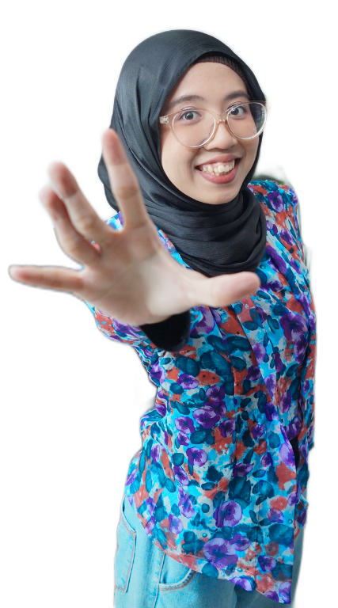

ABOUT ME
Get To Know Me
Hi! I'm Alfina Nugraheni Sugiyanto, a fresh graduate in Communication Science from Universitas Ahmad Dahlan with a GPA of 3.81/4.00.
I have a strong interest in Public Relations, Corporate Communication, Marketing Communication, Community Relations, Event Management, Sponsorship, and Digital Communication.
Throughout my academic journey and internships, I have developed communication, stakeholder management, event coordination, and content creation skills through various organizational and professional experiences.
Focus Competencies
ACADEMIC JOURNEY
Education
S1 Ilmu Komunikasi
Universitas Ahmad Dahlan
September 2021 – September 2025
GPA
3.81 / 4.00
Thesis
Analyzed advocacy content on Instagram @perempuan focused on preventing and addressing sexual violence in Indonesia, applying approaches in social listening, media analysis, and issue management.
LEADERSHIP & CAMPUS EXPERIENCE
Organization
Throughout my university journey, I actively participated in organizations, broadcasting, and independent study programs that strengthened my leadership, communication, project management, and digital communication skills.
5+
Sponsors Secured
Successfully secured partnerships with more than 5+ national brands.
1000+
Students Managed
Managed administrative data for over 1,000 university students.

Ramada FM – Radio Kampus UAD
Student Broadcasting Organization
Announcer • Social Media Specialist
Managed social media platforms, created digital content, copywriting, and promotional campaigns while continuing as a radio announcer.
Announcer • Event Promotion
Responsible for on-air broadcasting while supporting event promotion, publication, and audience engagement for campus radio activities.

Perhumas Muda Yogyakarta
Staff Sponsorship
Collaborated in preparing sponsorship proposals, approaching potential sponsors, negotiating partnership opportunities, and maintaining relationships with sponsor partners during organizational events.
Highlights
- 🏆 Contributed to securing 5 sponsorship partners.
- 🤝 Prepared sponsorship proposals and negotiated partnership opportunities.
- 💬 Maintained communication with sponsor partners throughout event execution.
- 💼 Worked with Wardah, Kahf, Ombe Jamu, Jolie, and Special Sambal.

RevoU Tech Academy
MSIB – Data & Software Engineering
Participated in Kampus Merdeka Independent Study Program focusing on Software Engineering, SQL, HTML, CSS, JavaScript, Git, and Data Analytics.
View Certificate →
Komisi Pemilihan Umum FSBK UAD
Staff Teknis & Pendataan
Assisted in faculty election activities by managing participant data, administration, and operational processes.
Highlights
- Managed database of 1,000+ students.
- Main operator during faculty election activities.
PROFESSIONAL JOURNEY
Experience
My professional experiences in Public Relations, Corporate Communication, Media Relations, Community Relations, CSR, and Event Management.

DPD RI Daerah Istimewa Yogyakarta
PT Kilang Pertamina International
Refinery Unit IV Balongan
Skatify Skate School (Roller Skating Course)
SPPG Tegal Alur 2 – Dapur Makan Bergizi Gratis (BGN)
DPD RI Daerah Istimewa Yogyakarta
Public Relations, Media & Protocol Affairs
Assisted protocol officers during official institutional visits and formal meetings while ensuring the smooth implementation of protocol procedures and event coordination.
Responsible for documenting more than 30+ official meetings, preparing Instagram publications, designing visual communication materials, and supporting institutional documentation.
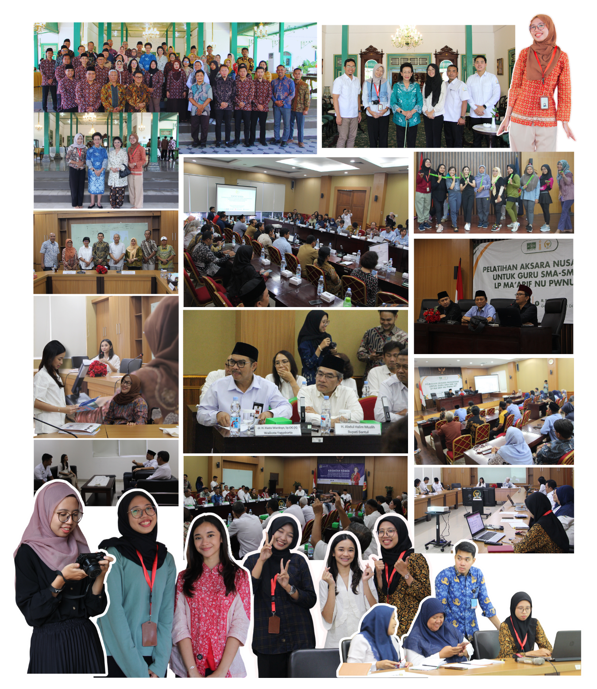
PT Kilang Pertamina International – Refinery Unit IV Balongan
Community Relations & CSR
Assisted the Community Relations & CSR division by supporting various internal and external corporate activities, including CSR program implementation, community engagement, and company event coordination.
Responsible for documentation, publication materials, event preparation, stakeholder coordination, and administrative support to ensure CSR activities were executed effectively and aligned with corporate objectives.
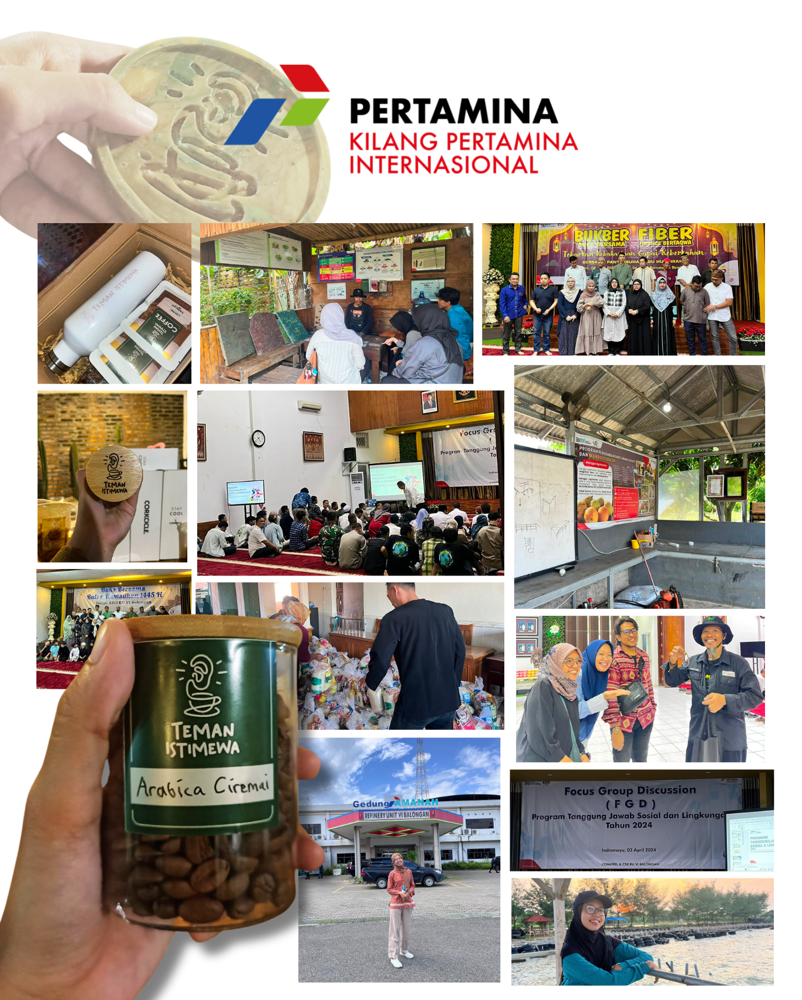
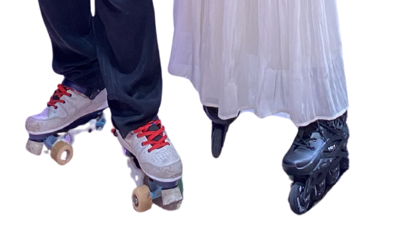
PT Skatify Creative Innovation
Public Relations & Sponsorship Coordinator
10+
Sponsorship Partners
40+
Parents Managed
2
New Programs
2
Skate Championships
Managed communication with more than 40 parents through WhatsApp regarding schedules, classes, programs, and student progress. Planned and coordinated 2 new programs, served as Sponsorship Coordinator by securing 10+ sponsors, collaborated with local businesses and national brands, prepared sponsorship proposals, and supported promotional content creation for Skatify.

SPPG Tegal Alur 2 – Dapur Makan Bergizi Gratis (BGN)
Staff Operasional & Partner Reation
4
Suppliers
6
Schools
30
Kitchen Volunteers
Assisted in managing operational partnerships with 4 food suppliers and prepared delivery documentation based on distribution data provided by the SPPG management for 6 beneficiary schools under Indonesia's Free Nutritious Meals (MBG) Program.
Supported the Field Assistant in daily operations by 30 kitchen volunteers, assisting with volunteer coordination, preparing operational documents, ensuring compliance with operational SOPs, and maintaining communication with suppliers, schools, and the operational team, and SPPG management.
Key Responsibilities
SELECTED PROJECTS
My Projects
A collection of projects that reflect my experience in event management, public relations, branding, and communication.
Wonderwave Festival
Creative Design Staff
About Project
Wonderwave Festival was a national communication and broadcasting event organized by Ramada, the Student Radio Community of Universitas Ahmad Dahlan. Under the theme "Finding the Mystery Soundwave," the festival featured competitions in Podcast, Radio Announcing, and News Anchoring, as well as the Wonderwave Fest Bootcamp, which offered participants opportunities to learn from industry practitioners, expand their professional networks, and develop broadcasting and communication skills.
My Contributions
- Designed the official event lanyard.
- Created promotional Instagram content.
- Created event certificate
- Designed promotional materials for the Wonderwave Fest Bootcamp.
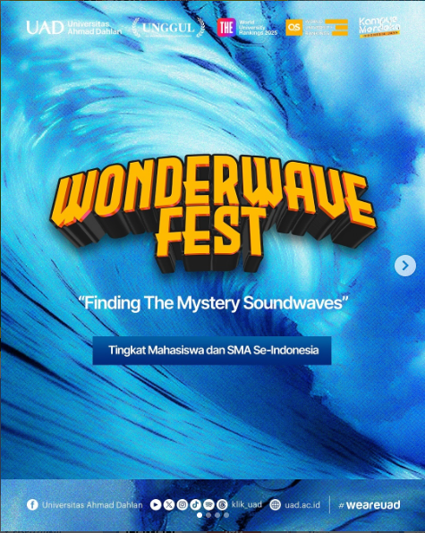
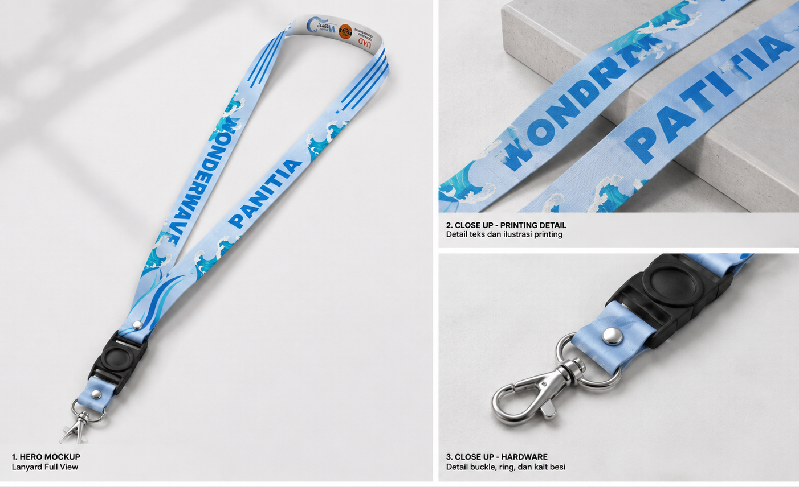


Jogja Public Relations Days (JPRD) 2023–2024
Sponsorship Staff
About Project
Jogja Public Relations Days (JPRD) 2023–2024 is an annual public relations event organized by Perhumas Muda Yogyakarta to promote learning, collaboration, and professional development in public relations. The event featured a series of activities, including PR competitions, workshops, talk shows, networking sessions, and cultural programs, bringing together students, academics, practitioners, and industry partners.
My Contributions
- Prepared sponsorship proposals in collaboration with the sponsorship team.
- Conducted sponsor outreach and partnership negotiations.
- Maintained communication with prospective and existing sponsors.
- Managed sponsorship administration and partnership documentation.
- Supported sponsor fulfillment before and during the event.
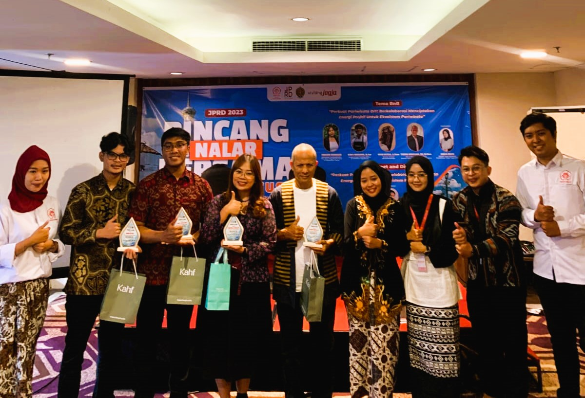
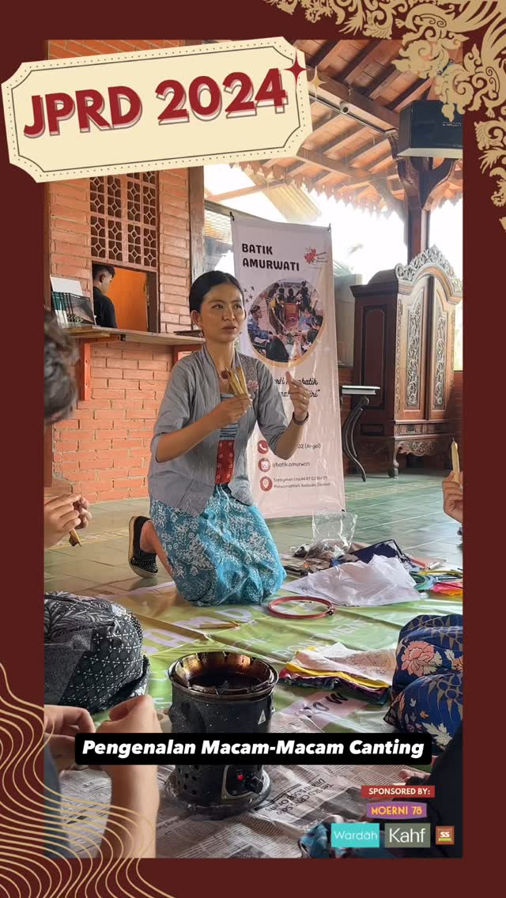
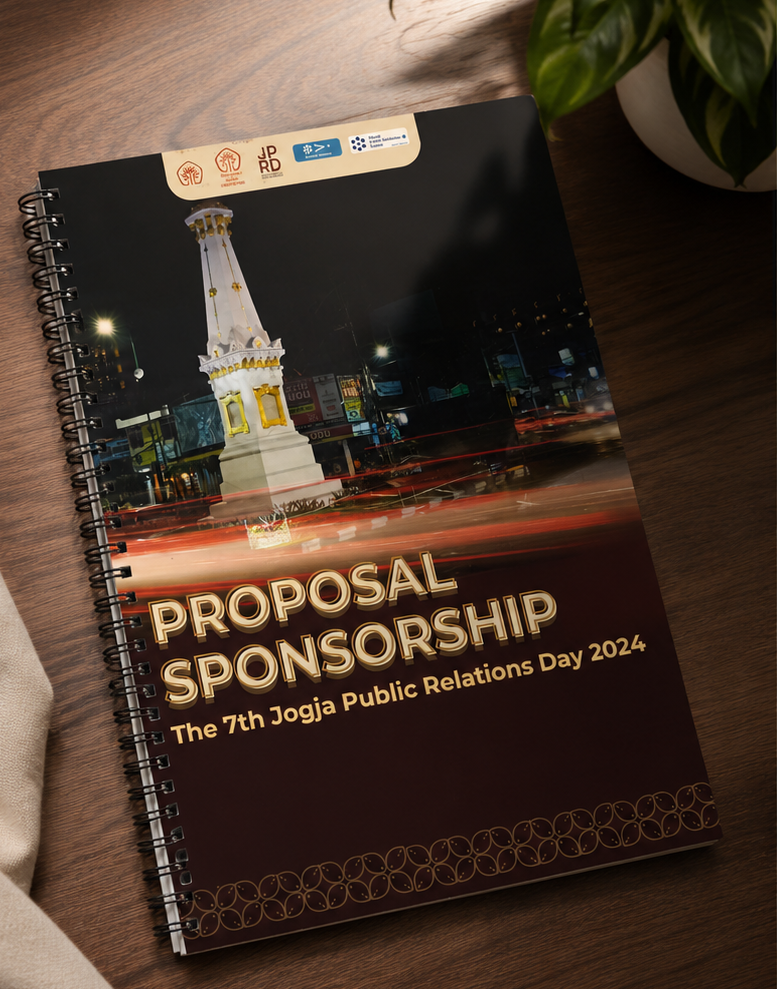
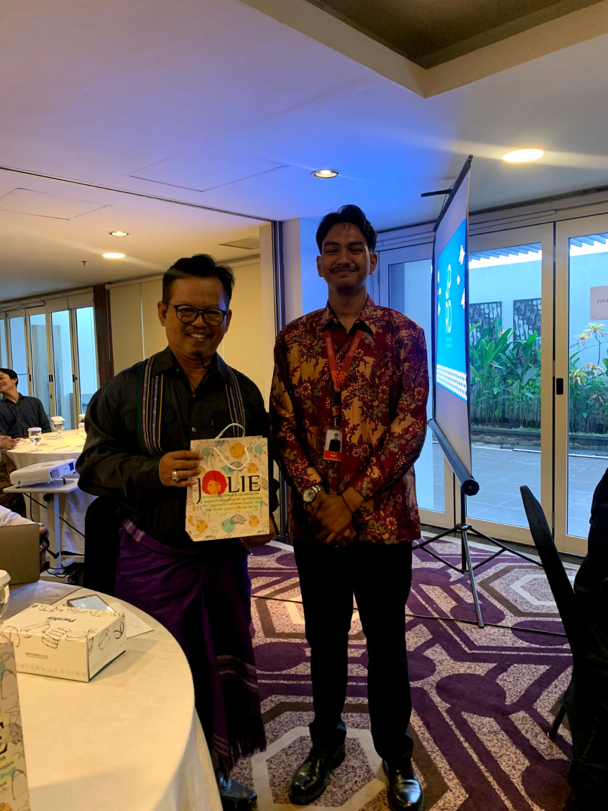
Skatify Roller Championship 2023 & 2024
Sponsorship & Event Committee
About Project
Skatify Championship 2024 was a national roller skating competition organized by Skatify to promote roller sports in Indonesia. The event brought together skaters from beginner to professional levels and aimed to develop talent, strengthen sportsmanship and solidarity among young people, and inspire a more active and healthy lifestyle.
My Contributions
- Identified and secured sponsorship opportunities by reaching out to prospective partners.
- Maintained communication and negotiated sponsorship collaborations with external stakeholders.
- Assisted in preparing sponsorship proposals and partnership documents.
- Coordinated sponsor fulfillment throughout the event.
- Assisted the field operations team to ensure activities ran according to the event schedule.
- Coordinated with committee members to support event logistics and participant experience.
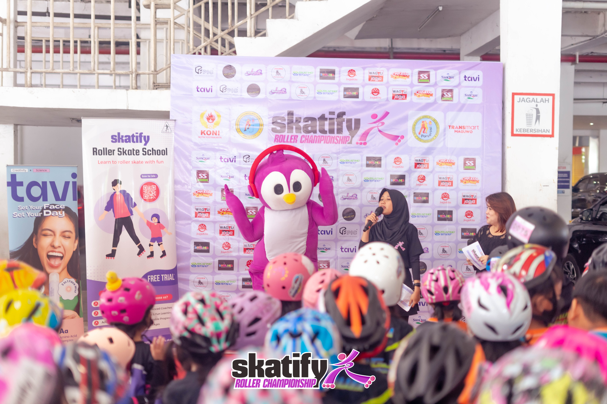
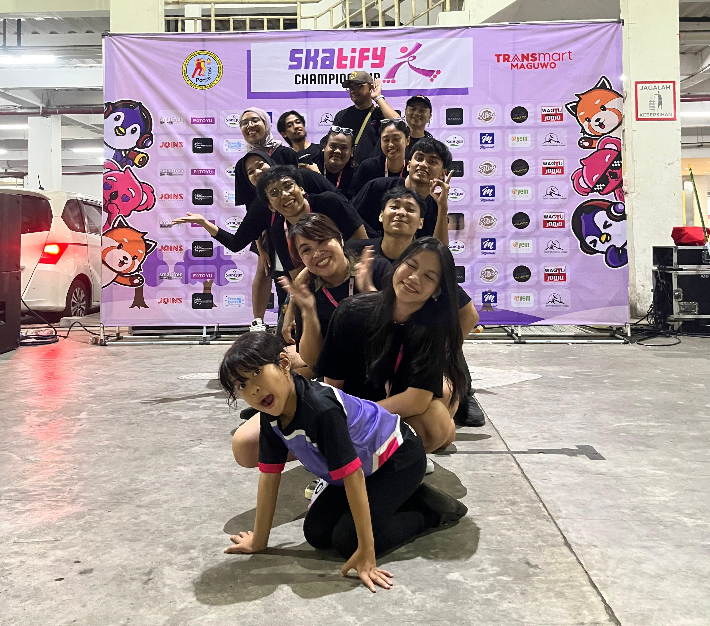
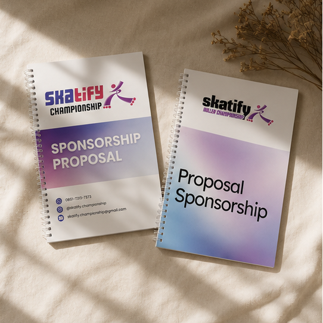
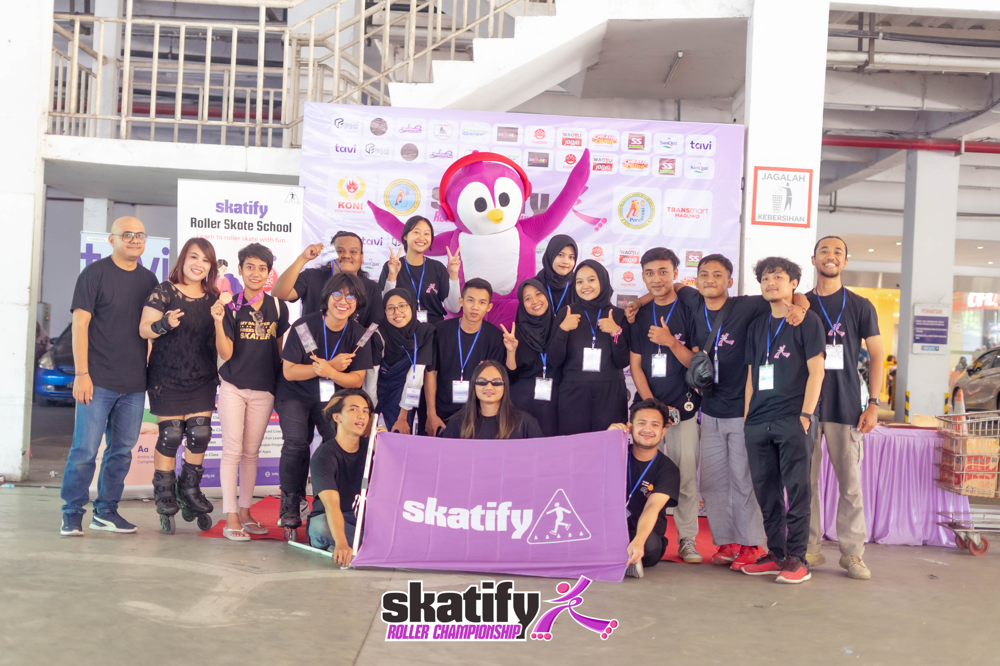
PROFESSIONAL PROFILE
My Skills
The tools I use and the professional skills I have developed through internships, organizational experiences, and communication projects.
Tools
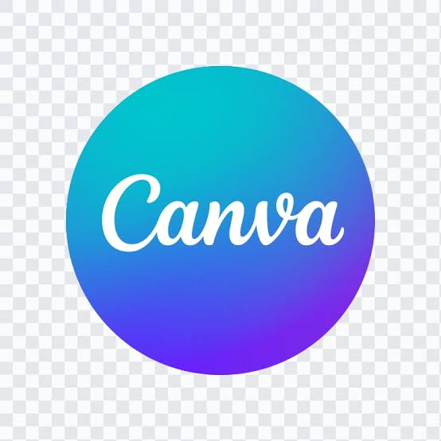
Canva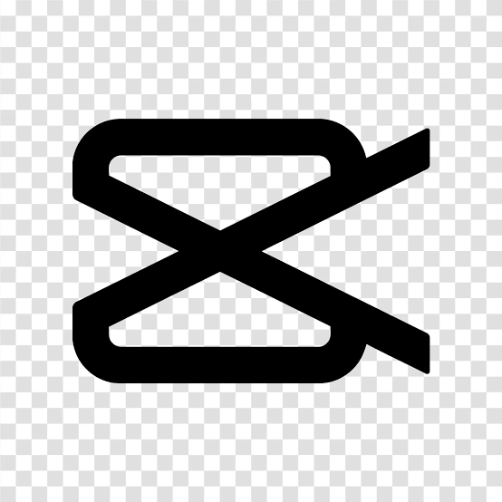
CapCutProfessional Skills
- Public Relations
- Media Relations
- Social Media Management
- Content Planning
- Copywriting
- Sponsorship & Partnership
- Event Coordination
- Administrative Management
- Public Speaking